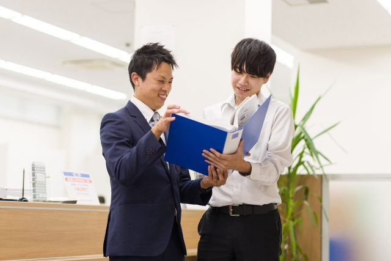
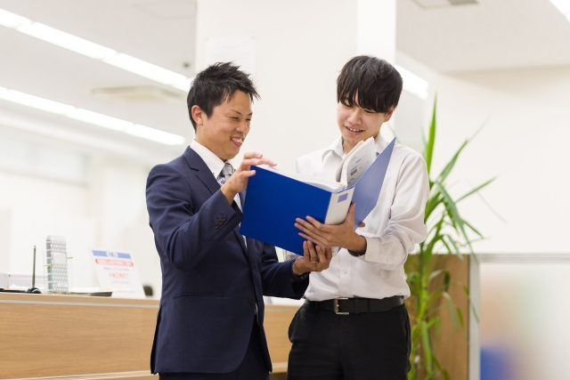

Requirements
 

新卒採用
new-graduate
募集要項
職種
営業職(総合職)
雇用形態
正社員
業務内容
地域の中小事業者や個人のお客様のもとへ訪問し、ご融資等の商品、サービスのご案内やご提案を行います。近年は金融機関の本業、企業への貸出に特化したビジネスモデルを確立（投資信託の販売はしていません）。また、チーム制による営業で、企業への支援・コンサルを職員が一丸となって取組んでいます。約8ヶ月間本部所属でカリキュラムに基づきしっかり研修を受けることができます。
総合職での採用のため、将来的には営業職以外への異動となるケースもあります。
就業時間
‖勤務時間
8:30～17:15実働7.75時間/1日
（休憩60分）
※残業あり
※2024年度の平均残業時間は5.48時間です
勤務地
岐阜県南部の各部店
※基本的には自宅から通える範囲の店舗に配属となります。
※基本的には自宅から通える範囲の店舗に配属となります。
車通勤の可否
可 ※勤務地によっては公共交通機関での通勤をお願いする場合があります。
給与
‖給与
月給22万円〜大 卒：220,000円（基本月給）
※短大卒の方は195,000円（基本月給）となります。
‖諸手当
・営業手当 （営業店配属時から2万円支給） ・時間外勤務手当 ・通勤手当 ・扶養家族手当 等 ※諸手当は基本給とは別で支給されます。‖昇給
年1回（7月）‖昇給
年2回（6月・12月）休日休暇
・完全週休2日制(土日祝)
・年末年始休暇
・年次有給休暇
・半日有給休暇
・時間有給休暇
※入組時に有休10日付与、勤続年数に応じて最大20日付与されます。 ※2024年度の有休取得率は74.9%です。
【その他の休暇（有給）】 ・慶弔休暇
・看護等休暇
・介護休暇
・ボランティア休暇 等
・年末年始休暇
・年次有給休暇
・半日有給休暇
・時間有給休暇
※入組時に有休10日付与、勤続年数に応じて最大20日付与されます。 ※2024年度の有休取得率は74.9%です。
【その他の休暇（有給）】 ・慶弔休暇
・看護等休暇
・介護休暇
・ボランティア休暇 等
福利厚生制度
‖福利厚生制度
・職員貸付制度 ・福利厚生倶楽部 ・資格取得支援制度 ・親睦助成費用負担制度 ・出産祝金（30万円～） ・産前産後休業 ・育児休業 ・フレックスタイム制 ・短時間勤務制度（5h、6h、7h） ・退職金制度 等 ※産休育休取得後の復帰率は100%です。‖保険
社会保険完備（健康保険、厚生年金、雇用保険、労働災害補償保険（労災））教育制度
・金融業務研修（新入職員研修）
・端末研修 等
◎営業職の方は、しっかりとしたスキルを身に付けてもらうため、入組後8か月間はカリキュラムに沿った手厚い研修を実施。その後、配属先の営業店でOJT研修（上司・先輩職員に同行）、3年目を目途に独り立ちをしていただきます。
・端末研修 等
◎営業職の方は、しっかりとしたスキルを身に付けてもらうため、入組後8か月間はカリキュラムに沿った手厚い研修を実施。その後、配属先の営業店でOJT研修（上司・先輩職員に同行）、3年目を目途に独り立ちをしていただきます。
選考について
‖応募方法
応募方法 応募資格：短大・大学卒業見込みの方 募集対象：学部・学科不問 まずは、マイナビまたはリクナビより、お気軽にエントリーしてください。 エントリーしていただいた方には定期的な情報配信や、順次説明会の日程等をお知らせします。‖連絡先（採用担当者）
経営管理部 住所 〒500-8812 岐阜市美江寺町2丁目4番地3 TEL 058-214-6354(直通) mail saiyou@shoushin.co.jp‖事業者名
岐阜商工信用組合採用実績校
愛知学院大学、愛知学泉大学、愛知淑徳大学、愛知大学、朝日大学、茨城大学、大阪学院大学、大阪経済法科大学、金沢大学、関西外国語大学、関西大学、京都産業大学、近畿大学、金城学院大学、岐阜協立大学、岐阜聖徳学園大学、岐阜大学、皇學館大学、神戸大学、国士舘大学、滋賀大学、静岡大学、下関市立大学、信州大学、椙山女学園大学、高崎経済大学、中京大学、中部学院大学、中部大学、東海学院大学、東海学園大学、富山大学、同志社大学、名古屋学院大学、名古屋経済大学、名古屋芸術大学、名古屋商科大学、名古屋市立大学、名古屋大学、南山大学、日本大学、日本福祉大学、日本文理大学、びわこ成蹊スポーツ大学、福山大学、明海大学、明治大学、名城大学、桃山学院大学、山梨学院大学、山梨大学、四日市大学、立命館大学
採用人数
6～10人
募集要項
Entry
あなたの 笑顔 は
最高 の
スキル です。